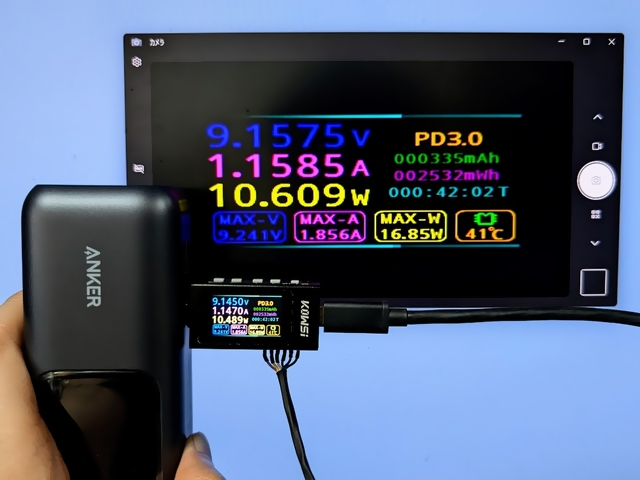
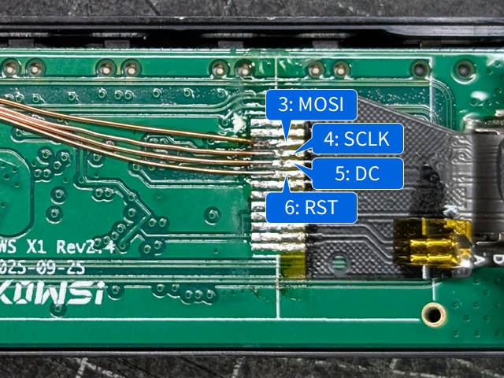

Capturing Screen of KWS-X1

Using LcdTap-Pico2 Universal
Connection

Connect the CS pin of LcdTap to GND.
Configuration
- Load preset for ST7789.
- Set Output Rotation to 270°.
- Set Trim Mode to Auto.
Using LcdTap-Pico2 for ST7789
Connection
| LcdTap (Pico2) | Connection |
|---|---|
| GND | KWS-X1’s GND |
| GPIO0 (RST) | KWS-X1’s RST (Pin 6) |
| GPIO1 (CS) | Pico2’s GND |
| GPIO2 (SCLK) | KWS-X1’s SCLK (Pin 4) |
| GPIO3 (MOSI) | KWS-X1’s MOSI (Pin 3) |
| GPIO4 (DC) | KWS-X1’s DC (Pin 5) |
| GPIO20 (CFG_OUT_720P) | Select according to your display |
| GPIO21 (CFG_LCD_SIZE_SEL) | Open or 3V3 |
| GPIO22 (CFG_SWAP_RB) | Open or 3V3 |
| GPIO26 (CFG_INVERTED) | GND (inverted) |
| GPIO28/27 (CFG_ROT[1:0]) | GND (270°) |